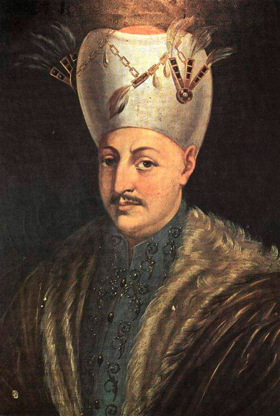

| önceki |  |
sonraki |
I. Ahmed, Osmanlı İmparatorluğu'nun on dördüncü padişahıdır. Babası III. Mehmed, annesi Handan Sultan'dır. Henüz 13 yaşındayken tahta çıkmış, sancağa çıkmadan tahta oturan ilk padişah olmuştur. Veraset sisteminde devrim niteliğinde reform yapmış, kardeş katli yasasını fiilen kaldırarak Osmanlı veraset sistemine "Ekber ve Erşed" kuralını getirmiştir.
Saltanatı ve Önemli Olayları
- Ekber ve Erşed Sistemi: Taht kavgalarını ve şehzade ölümlerini önlemek amacıyla tahta padişahın oğlunun değil, hanedanın en yaşlı (ekber) ve en akıllı/olgun (erşed) erkek üyesinin geçmesi kuralı getirilmiştir. Bu doğrultuda kardeşi Şehzade Mustafa'yı öldürtmemiştir.
- Sultanahmet Camii (Mavi Cami): Mimar Sinan'ın öğrencisi Sedefkâr Mehmed Ağa'ya İstanbul'un ilk 6 minareli şaheser camisi olan Sultanahmet Camii'ni ve külliyesini inşa ettirmiştir. Dünyada mavi İznik çinileri sebebiyle "Blue Mosque" olarak bilinir.
- Zitvatorok Antlaşması (1606): Avusturya ile imzalanan antlaşmayla Kanunî devrinden beri süregelen diplomatik üstünlük sona ermiş; Avusturya Arşidükü protokolde Osmanlı Padişahına eşit kabul edilmiştir.
- Celâlî İsyanlarının Bastırılması: Sadrazam Kuyucu Murad Paşa görevlendirilerek Anadolu'da devleti yıllardır yıpratan Celali isyanları sert önlemlerle kontrol altına alınmıştır.
- Edebiyat: I. Ahmed, "Bahtî" mahlasıyla samimi ve lirik divan şiirleri kaleme almıştır.
Ailesi
- Eşleri:
- Mahfiruz Hatice Sultân (Genç Osman'ın annesi)
- Kösem Mahpeyker Vâlide Sultân (IV. Murad, Sultan İbrahim, Şehzade Kasım ve Şehzade Süleyman'ın annesi)
- Fatma Hâtûn
- Erkek çocukları:
- Genç Osman (II. Osman) (1604 – 1622)
- IV. Murad (1612 – 1640)
- Sultan İbrahim (1615 – 1648)
- Şehzade Mehmed (1605 – 1621)
- Şehzade Süleyman (1615 – 1635)
- Şehzade Bayezid (1612 – 1635)
- Şehzade Kasım (1614 – 1638)
- Kız çocukları:
- Ayşe Sultân
- Fatma Sultân
- Gevherhan Sultân
- Hanzade Sultân
- Atike Sultân
- Abide Sultân
I. Ahmed hakkında daha fazla bilgi için buraya tıklayın.